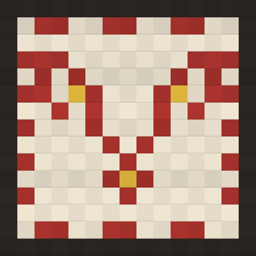

Gizlilik politikası
Yürürlük tarihi: 14 Ekim 2026
ilmek ilmek: kilim günlüğü ("uygulama"), LINE SOFT YAZILIM TİCARET SANAYİ LİMİTED ŞİRKETİ ("biz") tarafından yayımlanır. Kısaca: hiçbir kişisel veri toplamıyoruz.
Topladığımız veriler
Yok. Uygulamada hesap yoktur; uygulama internete bağlanmaz. Reklam, analiz, izleme ya da üçüncü taraf yazılım geliştirme kiti kullanılmaz. Biz senin sıralarını, notlarını ya da kullanımını göremeyiz.
Cihazında saklananlar
- Dokuduğun sıralar (tarih, motif, boya, ağırlık), isteğe bağlı kelime ve not yalnız bu cihazda saklanır.
- Ana ekran widget'ının gösterebilmesi için son 120 günün sıraları, yine bu cihazda, uygulama ile widget'ın ortak klasöründe tutulur.
- Ayarların (hatırlatıcı saati, son seçtiğin boya) bu cihazda saklanır.
Cihazının iCloud yedeklemesi açıksa bu bilgiler Apple'ın yedeğine dahil olabilir; bu, Apple'ın kendi gizlilik koşullarına tabidir.
Bildirimler
Akşam hatırlatıcısını açarsan uygulama senden bildirim izni ister. Hatırlatıcılar cihazında yerel olarak planlanır; hiçbir sunucudan gönderilmez.
Paylaşım ve dışa aktarma
Kilimini resim olarak paylaştığında ya da verilerini dışa aktardığında dosya yalnız senin seçtiğin yere (örneğin bir mesaj uygulamasına ya da Dosyalar'a) gider. Bize hiçbir şey gönderilmez.
Verilerini silmek
Bir sırayı uygulama içinden "Bu sırayı sök" ile silebilirsin. Uygulamayı cihazından silmek bütün verileri siler.
Çocuklar
Uygulama hiçbir yaştan kişisel veri toplamaz.
Değişiklikler
Bu politikayı değiştirirsek güncel hali bu sayfada, yeni yürürlük tarihiyle yayımlanır.
İletişim
Privacy policy
Effective date: 14 October 2026
ilmek ilmek: kilim günlüğü (the "app") is published by LINE SOFT YAZILIM TİCARET SANAYİ LİMİTED ŞİRKETİ ("we"). In short: we do not collect any personal data.
Data we collect
None. The app has no accounts and makes no network connections. It contains no advertising, analytics, tracking or third-party SDKs. We cannot see your rows, notes or usage.
Data stored on your device
The rows you weave (date, motif, dye, weight), and any optional word or note, are stored only on this device. The last 120 days of rows are also kept on the device in a folder shared with the Home Screen widget. Your settings (reminder time, last dye) stay on the device. If iCloud Backup is on, this data may be included in Apple's backup, subject to Apple's privacy terms.
Notifications
If you turn on the evening reminder, the app asks for notification permission. Reminders are scheduled locally on your device and are never sent from a server.
Sharing and export
When you share your kilim as an image or export your data, the file goes only where you choose. Nothing is sent to us.
Deleting your data
You can remove a row in the app with "Bu sırayı sök". Deleting the app removes all of its data.
Children
The app collects no personal data from anyone, of any age.